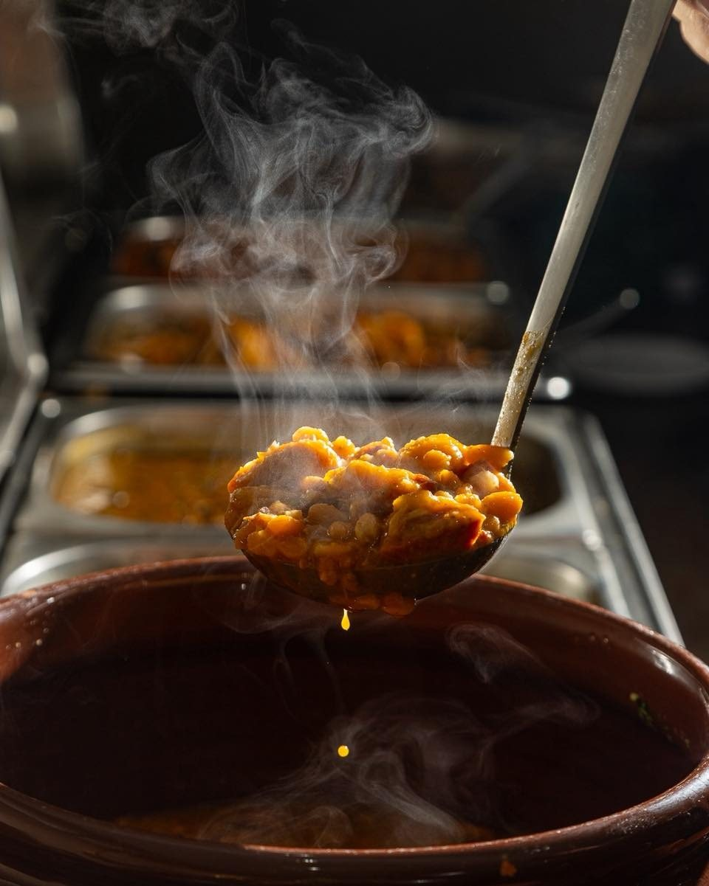
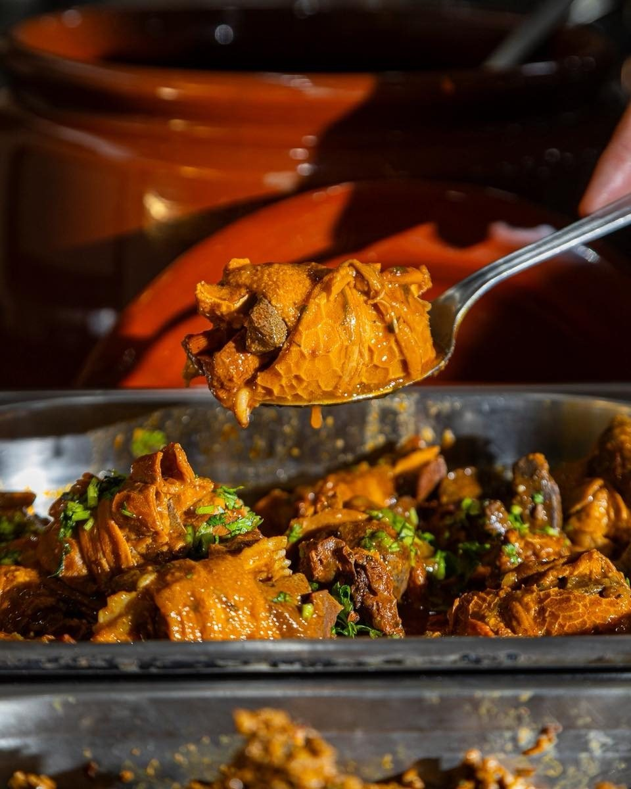

Início · Buffet livre
Buffet livre de quinta a domingo
Comida baiana e regional à vontade, por R$ 74,90, no salão da R. Maranhão, 445, Pituba. “Já traz a família!”, como diz a casa.
O buffet
Você monta o prato como quiser
“O problema do nosso buffet é só um: decidir por onde começar 👀 Tem comida tradicional, sabores que despertam memória e muita variedade para você montar o prato como quiser.”Sabor da Zu, no Instagram (01/10/2026)

Dias e horário
Quinta, sexta, sábado e domingo
- TerAlmoço
- QuaAlmoço
- QuiBuffet livre
- SexBuffet livre
- SábBuffet livre
- DomBuffet livre
- SegFechado
O buffet livre custa R$ 74,90 (Instagram da casa, 26/09/2026). A casa abre de terça a domingo, das 11h às 15h; de terça e quarta, o almoço segue pelo cardápio.
Na panela
O que a casa mostrou no buffet
Dobradinha
“Um clássico da comida raiz, preparado para quem valoriza os sabores tradicionais.” (30/09/2026)
Mininico de carneiro
“Disponível no buffet livre e também na opção a quilo.” (26/09/2026)
Caruru de setembro
“Amanhã é dia de comida baiana por aqui!”, no domingo 27/09/2026.
Maniçoba, sarapatel e mocotó
Citados pela casa entre os pratos do buffet de comida pesada.

Os pratos variam de um dia para o outro. Para saber o que tem hoje, pergunte pelo WhatsApp.
A quilo
Prefere pesar o prato?
Além do buffet livre, a casa tem a opção a quilo. O preço do quilo não está publicado: consulte no salão ou pelo WhatsApp.
Perguntar o que tem hojeDúvidas frequentes
Perguntas comuns
Precisa reservar?
A casa não publica reserva para o buffet. Para grupo grande, avise pelo WhatsApp.
O buffet tem nos outros dias?
Não: o buffet livre é de quinta a domingo. Na terça e na quarta, o almoço é pelo cardápio.
Bebida e sobremesa estão incluídas?
Não está publicado: confirme no salão ou pelo WhatsApp.
Peça agora
Comida baiana de família, direto no seu WhatsApp.
Monte o pedido, mande a mensagem e combine entrega ou retirada com a casa, sem comissão de aplicativo.